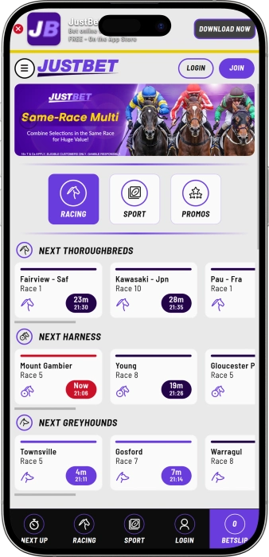

Exclusive welcome offer of
Exclusive welcome bonus of
Bet on Sports & Racing with Australia's Best Odds
Top Casinos
Bonus Details
Casino
Bonuses
Rate
Free Spins
More Info
Get
Advantages
- Looking for a trusted Australian bookmaker? We offer licensed betting with competitive odds, same race multis, and exclusive daily promotions. Here's what makes us the best choice for Aussie punters:
-
Licensed Australian bookmaker operating since 2023 with Melbourne headquarters
-
Best of 3 Totes on every Australian horse race with competitive fixed odds
-
Same Race Multi and Same Game Multi for AFL, NRL, Cricket, and major sports
-
Mobile app available on iOS and Android with dynamic design and live betting
-
10+ sports including AFL, NRL, cricket, tennis, soccer, and international racing
-
24/7 live chat support and fast EFT withdrawals for all Australian players
- Join thousands of Aussie punters enjoying top-tier racing coverage and sports betting. Our support team is ready to assist you with exclusive promotions every day.
JustBet App


About JustBet Australia
JustBet is an Australian-owned bookmaker proudly operating from Melbourne. We launched to provide Aussie punters with competitive odds, comprehensive racing coverage, and innovative betting features. Our platform combines cutting-edge technology with local expertise.
- Launched same race multi feature for bigger odds and better value
- Introduced Best of 3 Totes on all Australian horse racing events
- Expanded sports coverage to 10+ disciplines with same game multis
- Released mobile apps for iOS and Android with live betting features
We operate under strict Australian gambling regulations with full licensing compliance. Our platform uses advanced security measures to protect your account and personal data. All odds and payouts are verified for fairness and transparency. We continue expanding our racing and sports offerings with new markets daily. Our commitment to responsible gambling ensures a safe betting environment. Experience why we're Australia's fastest-growing bookmaker for racing and sports.
Racing & Sports Betting Guide
Your Complete Guide to Betting with JustBet Australia
At JustBet, we pride ourselves on delivering the ultimate betting experience for Australian punters. Our platform combines comprehensive racing coverage with diverse sports markets, innovative multi betting options, and competitive odds across all events. Whether you're backing your favourite horse at Flemington or placing a same game multi on the AFL grand final, we provide the tools and markets you need to maximise your betting potential.
Australian Horse Racing Coverage
We offer complete coverage of all Australian thoroughbred, harness, and greyhound racing. Our racing product features the exclusive Best of 3 Totes on every Australian race, ensuring you always get the best possible dividend. We release fixed odds prices days in advance, allowing you to lock in value before markets move. Our same race multi feature lets you combine multiple selections in a single race for enhanced odds and bigger potential returns.
Our racing coverage includes all major Australian meetings from premier tracks like Flemington, Randwick, Caulfield, Rosehill, Eagle Farm, and Morphettville. We also provide international racing from the UK, USA, Ireland, South Africa, Japan, France, Canada, Germany, and Sweden. With early markets, live odds updates, and comprehensive form guides, you have everything needed to make informed betting decisions on racing events worldwide.
- Best of 3 Totes: Automatically receive the best dividend from three tote pools on every Australian race, guaranteeing maximum value on winning bets.
- Same Race Multi: Combine multiple horses in the same race to finish in the top four positions with fixed odds calculated before the jump.
- Early fixed odds: Access competitive prices released days before race day, allowing you to secure value before market movements affect prices.
- International racing: Bet on premium meetings from major racing nations including Royal Ascot, Kentucky Derby, Dubai World Cup, and Japan Cup events.
- All racing codes: Comprehensive coverage of thoroughbred racing, harness racing, and greyhound racing from tracks across Australia and internationally.
Sports Betting Markets
Our sports betting platform covers more than ten major sports with extensive market depth on popular Australian and international competitions. We specialise in AFL and NRL coverage with same game multis available on every match, featuring markets for disposals, tries, goals, margins, quarters, halves, and first-to scoring options. Our competitive odds and comprehensive market selection ensure you find value across all major sporting events.
We offer betting on AFL, NRL, cricket, tennis, soccer, rugby union, basketball, baseball, golf, gridiron, ice hockey, netball, boxing, and many more sports. Our soccer coverage includes over thirty leagues from around the world, while basketball features fifteen-plus international competitions. Each sport provides win/loss/draw markets, handicaps, totals, player props, and specialised betting options tailored to the specific game format.
| Sport | Min Bet | Features |
|---|---|---|
| AFL | $1 | Same Game Multi |
| NRL | $1 | Same Game Multi |
| Cricket | $1 | Live Betting |
| Tennis | $1 | Live Betting |
| Soccer | $1 | 30+ Leagues |
| Basketball | $1 | 15+ Leagues |
| Racing | $1 | Best of 3 Totes |
Same Game Multi and Same Race Multi
Our innovative multi betting features allow you to combine selections from the same event for enhanced odds and bigger potential payouts. Same game multis are available on AFL and NRL matches, letting you combine markets like match result, player disposals, goal scorers, margins, and quarter outcomes into a single bet with combined odds. This feature transforms standard betting into exciting multi-leg opportunities with significantly increased returns when all selections win.
Same race multis work similarly for horse racing, allowing you to select multiple horses in the same race to finish anywhere in the top four positions. We calculate fixed odds for your combination before the race starts, eliminating uncertainty about potential dividends. This unique feature is exclusive to Australian racing and provides exceptional value for punters who can identify multiple strong chances in competitive fields.
- AFL same game multi: Combine win/loss, handicap, disposals, goals, margins, quarter markets, and first-to options in a single bet.
- NRL same game multi: Merge match result, line, tries, points, half markets, and player performance props for bigger odds.
- Same race multi: Pick multiple horses to finish top four in the same race with fixed odds determined before the jump.
- Dynamic odds calculation: Our system automatically calculates combined odds as you add selections, showing potential returns instantly.
- Live same game multis: Available on selected AFL and NRL matches, allowing you to build multis while the game is in progress.
Mobile Betting Experience
Our mobile app delivers the complete JustBet experience on iOS and Android devices. We built our app with dynamic design principles, ensuring fast loading times, intuitive navigation, and seamless bet placement on any screen size. Access all racing and sports markets, view live odds updates, manage your account, claim promotions, and contact support directly through the app interface.
The JustBet mobile app features exclusive daily racing promotions that appear when you log in, providing bonus offers and enhanced odds opportunities not available on the desktop site. Our app supports live betting on racing and sports, with real-time odds updates and quick bet slip functionality. Download from the App Store or Google Play to experience premium mobile betting optimised for Australian racing and sports punters.
Exclusive Daily Promotions
We reward our members with racing promotions available seven days per week. Our daily offers include enhanced odds on selected races, bonus bets for multi-leg wagers, cashback specials on losing favourites, and money-back guarantees on specific race types. Every promotion is designed to add value to your betting experience and increase your potential returns across racing and sports markets.
Our promotional calendar features regular bonuses for loyal punters, including weekly rebates on net losses, refer-a-friend bonuses, and seasonal campaigns during major racing carnivals and sports finals. We communicate all active promotions through the mobile app, email notifications, and our website banner, ensuring you never miss an opportunity to claim bonus value on your betting activity.
Payment Methods and Account Management
We accept deposits via credit card, debit card, POLi, and EFT bank transfer, providing convenient options for all Australian punters. Deposits are processed instantly, allowing you to start betting immediately after funding your account. Withdrawals are processed through EFT bank transfer with fast turnaround times, ensuring you receive your winnings promptly and securely into your nominated Australian bank account.
Our account management system gives you complete control over your betting activity. Set deposit limits, view transaction history, track active bets, manage notifications, and update personal details through your account dashboard. We implement responsible gambling measures including self-exclusion options, reality checks, and access to support resources for anyone concerned about their betting behaviour.
Software Providers
Responsible Gambling & Support
Betting Safely with JustBet Australia
At JustBet, we take responsible gambling seriously and provide comprehensive tools to help you maintain control over your betting activity. We operate under strict Australian gambling regulations and hold all necessary licenses to offer wagering services to Australian residents. Our commitment to player safety extends beyond regulatory compliance, incorporating industry-leading responsible gambling features and dedicated support resources for anyone experiencing difficulties with their betting behaviour.
Responsible Gambling Tools
We offer multiple tools designed to help you gamble responsibly and stay within your personal limits. Our deposit limit feature allows you to set daily, weekly, or monthly maximums on how much you can deposit into your account. Once set, these limits cannot be increased for a minimum cooling-off period, preventing impulsive decisions during betting sessions. You can also set loss limits, wagering limits, and session time reminders to maintain awareness of your gambling activity.
Our reality check feature sends periodic notifications during extended betting sessions, reminding you how long you have been active and prompting you to consider taking a break. This tool helps maintain perspective during lengthy gambling sessions and encourages regular breaks from betting activity. We also provide detailed activity statements showing all transactions, bets placed, wins, losses, and net position over any selected timeframe.
- Deposit limits: Set daily, weekly, or monthly deposit caps that cannot be exceeded, with cooling-off periods before any limit increases take effect.
- Loss limits: Define maximum losses over specific periods to prevent betting beyond your comfortable threshold and protect your bankroll.
- Session reminders: Receive notifications at intervals you choose, prompting awareness of time spent gambling and encouraging regular breaks.
- Activity statements: Access comprehensive reports showing all betting activity, deposits, withdrawals, and net results for complete transparency.
- Self-exclusion options: Temporarily or permanently exclude yourself from betting, with options ranging from twenty-four hours to permanent closure.
Customer Support Services
Our customer support team operates via live chat and email to assist with all account queries, technical issues, and betting questions. Live chat provides instant responses during business hours, connecting you directly with knowledgeable support staff who can resolve most issues immediately. For complex queries requiring detailed investigation, our email support team provides comprehensive responses within twenty-four hours.
We maintain extensive help documentation covering account registration, deposit methods, withdrawal processes, bet types, same race multis, same game multis, odds formats, and promotional terms. Our FAQ section addresses common questions about racing markets, sports betting rules, payout calculations, and account verification requirements. This self-service resource library helps you find answers quickly without needing to contact support for routine inquiries.
- Live chat support: Instant assistance during business hours for urgent queries about betting, deposits, withdrawals, and account management.
- Email support: Detailed responses to complex questions within twenty-four hours, with attachments and comprehensive explanations when needed.
- Help centre: Comprehensive documentation covering all aspects of betting, account management, promotions, and responsible gambling tools.
- FAQ section: Quick answers to frequently asked questions about racing, sports, betting rules, odds, payments, and account verification.
- Video tutorials: Step-by-step guides showing how to place same race multis, same game multis, and access advanced betting features.
Understanding Betting Odds
We display odds in decimal format, which is standard for Australian bookmakers and represents the total return including your original stake. For example, odds of three point five zero means a ten-dollar bet returns thirty-five dollars if successful, including your original stake. Understanding odds helps you calculate potential returns, compare value across different markets, and make informed betting decisions based on probability and expected value.
Our platform allows you to compare our fixed odds with tote dividends in real-time, helping you decide whether to take the fixed price or wait for the tote dividend. With our Best of 3 Totes feature on Australian racing, you automatically receive the highest dividend from three tote pools, eliminating the need to manually compare. This ensures maximum value on every winning bet without requiring constant monitoring of fluctuating tote pools.
Account Verification and Security
We require identity verification for all accounts to comply with Australian anti-money laundering regulations and prevent underage gambling. Our verification process requires submission of a government-issued photo ID and proof of address document. Verification typically completes within twenty-four hours, and you can deposit and bet while verification is processing, though withdrawals require completed verification before processing.
We implement advanced security measures to protect your account and personal information. Our platform uses SSL encryption for all data transmission, secure servers for information storage, and two-factor authentication options for enhanced account protection. We never share your personal details with third parties except as required by law or for payment processing purposes, maintaining strict privacy standards for all customer data.
- Identity verification: Submit government-issued photo ID and proof of address to verify your account and enable withdrawal processing.
- SSL encryption: All data transmitted between your device and our servers is encrypted using industry-standard security protocols.
- Two-factor authentication: Optional extra security layer requiring a verification code from your mobile device when logging in.
- Secure payment processing: All financial transactions are processed through certified payment gateways with bank-level security standards.
- Privacy protection: Your personal information is stored securely and never shared with third parties without your consent or legal requirement.
Betting Strategies and Tips
Successful betting requires discipline, research, and bankroll management. We recommend setting a betting budget that represents only discretionary funds you can afford to lose, never betting with money needed for essential expenses. Establish a unit size representing a small percentage of your total bankroll, typically between one and five percent, and stake consistent unit amounts rather than chasing losses with larger bets.
Research is fundamental to informed betting decisions. For racing, study form guides, track conditions, jockey and trainer statistics, barrier positions, and recent performance patterns. For sports betting, analyse team form, head-to-head records, injury reports, weather conditions, and statistical trends. Our platform provides access to comprehensive form information and statistics to support your research and help identify value betting opportunities.
Major Racing Carnivals and Sports Events
We provide comprehensive coverage of all major Australian racing carnivals including the Melbourne Cup Carnival, Sydney Autumn Carnival, Brisbane Winter Carnival, Adelaide Autumn Carnival, and Perth Summer Carnival. Our markets for Group One races feature enhanced odds, special promotions, and same race multi options for every race on the carnival program. We release early fixed odds for feature races, allowing you to lock in value before market fluctuations.
Our sports betting covers all major Australian and international events including AFL finals, NRL finals, Australian Open tennis, cricket test matches, One Day Internationals, Big Bash League, A-League soccer, NBL basketball, State of Origin rugby league, and international rugby union. We offer extensive markets for each event with same game multis, live betting, and exclusive promotions designed to enhance your betting experience during major sporting occasions.
Getting Started with JustBet
Creating an account takes just minutes and requires basic personal information including name, date of birth, address, and contact details. After registration, make your first deposit using your preferred payment method and start betting immediately on racing and sports markets. New members can claim exclusive welcome promotions and access our full range of betting features from the moment their account is created.
Download our mobile app from the App Store or Google Play to access exclusive daily promotions and enjoy seamless betting on the go. Our app provides the complete JustBet experience optimised for mobile devices, with fast bet placement, live odds updates, account management, and customer support all accessible through your smartphone or tablet. Join JustBet today and discover why we are Australia's premier destination for racing and sports betting.
Frequently Asked Questions
Creating an account is simple and takes just a few minutes. Visit our website or download the mobile app, click the registration button, and provide basic details including your name, date of birth, address, email, and phone number. You must be eighteen years or older and located in Australia. After registration, deposit funds and start betting immediately on racing and sports.
Best of 3 Totes is our exclusive feature that automatically gives you the highest dividend from three different tote pools on every Australian race. When you place a tote bet, we compare the dividends from three major tote operators and pay you the best one. This ensures maximum value on winning bets without needing to manually check multiple tote pools.
Same Race Multis allow you to combine multiple horses in the same race to finish anywhere in the top four positions. Select your horses, and we calculate fixed odds for your combination before the race starts. All selections must finish in the top four for your bet to win. This feature provides bigger odds than backing horses individually and is available on Australian racing only.
We offer betting on more than ten sports including AFL, NRL, cricket, tennis, soccer, rugby union, basketball, baseball, golf, gridiron, ice hockey, netball, and boxing. Our AFL and NRL coverage includes same game multis with extensive markets for disposals, tries, goals, margins, and quarters. Soccer features thirty-plus leagues while basketball offers fifteen-plus international competitions.
Withdrawals are processed via EFT bank transfer and typically reach your Australian bank account within one to three business days. Your account must be fully verified with approved ID and proof of address before withdrawals can be processed. We aim to approve withdrawal requests within twenty-four hours, after which your bank processes the transfer to your nominated account.
We accept credit cards, debit cards, POLi, and EFT bank transfer for deposits. All deposit methods are processed instantly, allowing you to start betting immediately after funding your account. Minimum deposit amounts vary by payment method, with most options requiring a minimum of ten dollars. There are no fees charged by JustBet for deposits using any accepted payment method.
Yes, we offer exclusive daily racing promotions that appear when you log into the mobile app. These include enhanced odds on selected races, bonus bets for multi-leg wagers, cashback specials, and money-back guarantees. We also run seasonal campaigns during major racing carnivals and sports finals. Check your account dashboard and email regularly for the latest promotional offers.
Absolutely! We offer dedicated mobile apps for iOS and Android devices available through the App Store and Google Play. Our app provides the complete JustBet experience with all racing and sports markets, live betting, account management, and exclusive mobile-only promotions. The app features dynamic design optimised for smartphones and tablets with fast loading and intuitive navigation.
Contact us via live chat for instant assistance during business hours or send an email for detailed queries that require investigation. Live chat is available directly through the website and mobile app, connecting you with our support team immediately. For email support, expect responses within twenty-four hours. We also provide comprehensive help documentation and FAQs for self-service assistance.
We offer multiple responsible gambling tools including deposit limits, loss limits, wagering limits, session time reminders, reality checks, activity statements, and self-exclusion options. You can set these limits through your account dashboard to maintain control over your betting activity. We also provide links to support organisations like Gambling Help Online for anyone experiencing difficulties with their gambling.